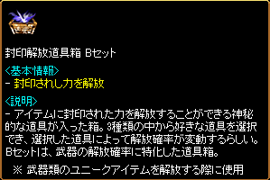

韓国 2013年6月12日アップデート
※韓国公式と韓国人プレイヤーから頂いた情報を基にしています。誤訳や韓国独自仕様の可能性もありますので、予めご了承下さい。2013年6月12日 韓国大型アップデートの変更内容一覧
モンスター召喚アイテム「謎の壷」「奇妙な壷」実装
その他の変更点
不具合修正
モンスター召喚アイテム「謎の壷」「奇妙な壷」実装
パーティーボスモンスター討伐時や秘密ダンジョン・ギルドダンジョンクリア時に、一定確率で壷を入手できます。
適正Lvのパーティーボスモンスターでなくても入手可能。
秘密ダンジョン・ギルドダンジョンはLv200以上のダンジョンでのみ、入手可能。
壷は鞄に直接入ります。鞄が満載の場合は、地面にドロップ。
壷は街、銀行、冒険家協会などを除く狩場で使用可能。
壷を使用すると強力なモンスターが出現し、制限時間内に倒すと経験値と報酬アイテムを獲得することができますが、制限時間内に倒せなかった場合、モンスターは消滅してしまいます。
| 謎の壷 | 奇妙な壷 | |
|---|---|---|
| 画像 | ||
| 制限時間 | 60秒 | 第一形態 150秒 第二形態 600秒 |
| モンスターLv | 壷使用者と同Lv （最小Lv200） | Lv999 |
| モンスター種類 | 鷲王Zin ゴーストZin サキュバスZin アライブコープスZin など |
第一形態 リッチ、 ストーンオブザーZin 第二形態 アークデビル、 アクアドラゴン |
| 与ダメージ | 通常ダメージ | 1 （固定） |
| 経験値 | Lv・種類・討伐時間による | 1 （固定） |
| 報酬 | 第一形態 第二形態 |
|
| 報酬対象 | 壷使用者のパーティーメンバー全員 | 攻撃した人全員 |
 |
謎の壷 壷は取引可能。 |
|
 |
狩場で使用すると壷が置かれて… |
|
 |
壷からモンスターが出現！ 制限時間60秒以内に討伐します。 謎の壷から出現するモンスターのLvは、使用者のLvに依存。 壷使用者Lv155 ⇒ 鷲王（Lv200）Zin Lv155 → 経験値 約47万 Lv147 → 経験値 約36万 （経験値は全て無課金換算） |
|
 |
壷使用者Lv148 ⇒ ゴースト（Lv200）Zin Lv148 → 経験値 約5万 Lv136 → 経験値 約2万6000 壷使用者Lv291 ⇒ ゴースト（Lv291）Zin Lv291 → 経験値 約145万〜158万 壷使用者Lv628 ⇒ ゴースト（Lv628）Zin Lv628 → 経験値 約300万 モンスターの種類や討伐時間によって、 経験値がかなり変わります。 |
|
 |
壷使用者Lv291 ⇒ サキュバス（Lv291）Zin Lv291 → 経験値 約474万 壷使用者Lv294 ⇒ サキュバス（Lv294）Zin Lv294 → 経験値 約270万 |
|
 |
壷使用者Lv732 ⇒ アライブコープス（Lv732）Zin Lv732 → 経験値 約500万 |
|
 |
謎の壷から出現したモンスターを倒すと、 パーティーメンバー全員が青色の聖水結晶体を獲得。 |
|
 |
青色の聖水結晶体を使用すると、 ベリーに似た経験値増加アイテムが出現します。 カシの実 狩りでの獲得経験値 20分間 110％ 増加 |
|
 |
熟したカシの実 狩りでの獲得経験値 20分間 140％ 増加 |
|
 |
奇妙な壷からは使用者のLvに関わらず、 Lv999のモンスターが出現。 第一形態のリッチ（Lv999）。 経験値は固定で1。 （課金アイテムの有無に関わらず固定） ダメージも固定で1しか与えられません。 |
|
 |
第一形態のストーンオブザー（Lv999）Zin。 制限時間150秒以内に 第一形態のモンスターを倒すと、 攻撃した人全員が 青色の聖水結晶体を獲得。 |
|
 |
第二形態のアークデビル（Lv999）。 制限時間は600秒。 Lv600〜800代の8人パーティーで討伐失敗。 制限時間内に倒すには、3〜4パーティーほど必要なようです。 |
|
 |
第二形態のアクアドラゴン（Lv999）。 1000〜2万以上のダメージを 受ける場合もあります。 100人5分程で討伐成功！ |
|
 |
第二形態のモンスターを倒すと、 攻撃した人全員が一定の確率で金色の聖水結晶体を獲得。 |
|
 |
金色の聖水結晶体を使用すると、 錬成・解放の材料アイテムが出現します。 封印解放道具箱 Bセット |
|
|  | 封印解放道具箱 Bセット （日本版） 2011.11.22アップデートの錬成・解放の未実装アイテムで紹介した封印解放道具箱 B、Cセットがついに実装。 |
|
| 金色の聖水結晶体 出現アイテム一覧 | ||
|---|---|---|
| アイテム | 説明 | |
| 発火石 20個 | 炎の石を製作するための材料の一つ。断熱石と合わせて使うことで、黒き炎の力を引き出せる。 ※ レベル差が少ないモンスターを倒した時に、モンスターが落とすことがあります |
|
| 断熱石 20個 | 炎の石を製作するための材料の一つ。発火石と合わせて使うことで、黒き炎の力を引き出せる。 ※ レベル差が少ないモンスターを倒した時に、モンスターが落とすことがあります |
|
| 黒き炎の欠片 | 神秘的な力を持った黒い炎の小さな欠片。ほんのひと滴ほどの大きさだが、その中に秘められている力は膨大で、装備の錬成材料に最適。 ※ 1日クエストで入手可能 |
|
| 炎の石 | 断熱石を加工して作った小さな型の中に、発火石と黒き炎の欠片を1：1の割合で混ぜ合わせて作った炎の石。強力な火力を持つため小さな石しか作ることができず、何かに使用する場合には、さらに加工が必要だが、現状でも非常に高価。 ※ 錬成材料の購入に使用できます。 ※ ランディスが、炎の石に大変興味を持っているとの噂がある・・・ |
|
| 揮発性の炎の錬成剤 | 神秘に満ちた黒き炎の欠片を浸して作った浄水。これを使って装備を強化することができる。密封されていないため取引不可。 ※ 錬成剤のみで錬成する場合、称号は引き継がれませんが、特殊な補助剤を購入して錬成剤と一緒に使用すれば称号を引き継ぐことが可能です。 ※ 取引不可アイテム |
|
| 密封された炎の錬成剤 | 神秘に満ちた黒き炎の欠片を浸して作った浄水。これを使って装備を強化することができる。密封されているため取引可能。 ※ 錬成剤のみで錬成する場合、称号は引き継がれませんが、特殊な補助剤を購入して錬成剤と一緒に使用すれば称号を引き継ぐことが可能です。 |
|
| 熱い風のふいご | 特殊な風を送ることができる特別なふいご。足で踏み、熱い風を起こして黒き炎を燃えさせる。 ※ 失敗時、完全にアイテムが破壊されないよう保護する |
|
| 冷たい風のふいご | 特殊な風を送ることができる特別なふいご。足で踏み、冷たい風を起こして黒き炎を調節する。 ※ 錬成時、高い確率で封印されたオプションを呼び覚ます。さらに、失敗時、完全にアイテムが破壊されないよう保護することが可能 |
|
| 神秘のふいご | 特殊な風を送ることができる特別なふいご。足で踏み、神秘の風を起こして黒き炎を調節する。 ※ 錬成時、高い確率で封印されたオプションを呼び覚ます。さらに、錬成が100％成功する |
|
| 封印解放道具箱 Aセット | 封印されし力を解放 アイテムに封印された力を解放することができる神秘的な道具が入った箱。3種類の中から好きな道具を選択でき、選択した道具によって解放確率が変動するらしい。Aセットは、防具の解放確率に特化した道具箱。 ※ 防具類のユニークアイテムを解放する際に使用 |
|
| 封印解放道具箱 Bセット | 封印されし力を解放 アイテムに封印された力を解放することができる神秘的な道具が入った箱。3種類の中から好きな道具を選択でき、選択した道具によって解放確率が変動するらしい。Bセットは、武器の解放確率に特化した道具箱。 ※ 武器類のユニークアイテムを解放する際に使用 |
|
| 封印解放道具箱 Cセット | 封印されし力を解放 アイテムに封印された力を解放することができる神秘的な道具が入った箱。3種類の中から好きな道具を選択でき、選択した道具によって解放確率が変動するらしい。Cセットは、アクセサリー及び防具の解放確率に特化した道具箱。 ※ アクセサリー及び防具のユニークアイテムを解放する際に使用 |
|
その他の変更点
・復帰者称号の有効を表示する機能追加。
不具合修正
・ランサースキル「マルチプルツイスター」発動時に、分身が正常に表示されなかった不具合修正。
・転生者用の指輪スロットにセットアイテムの指輪を着用時、セット効果が正常に適用されない不具合修正。
・出席チェッククエストの報酬が正常に配布されなかった不具合修正。
・メイドスキル「ナマクリエの祝福」の運増加の効果に、装備やスキルマスター称号によるスキルレベル増加が適用されていなかった不具合修正。
・クイックスロットにセットしたブローチをショートカットキーで使用できない不具合修正。
・バヘル台地 / エルベルグ山脈西部地域のセットアイテムボスモンスター「原始人族長」と50以上レベル差があっても、ネクロマンサーのスキル「烈火の怒り」で倒すことができた不具合修正。
・ウルフマンの覚醒スキル「リバウンディングリニア」を使用中に死亡した場合、復活後にキャラクターを移動させても画面が動かなかった不具合修正。
・冒険家協会 冒険家訓練所で完全復活巻物を無限に獲得できた不具合修正。
・メイドの武器「インフィニティイノセント6」の要求レベル制限が、誤って適用されていた不具合修正。
転生者専用の装備はゲームバランスに問題が生じる恐れがあるため、今回の実装は見送られました。
今後の実装時期についても未定です。